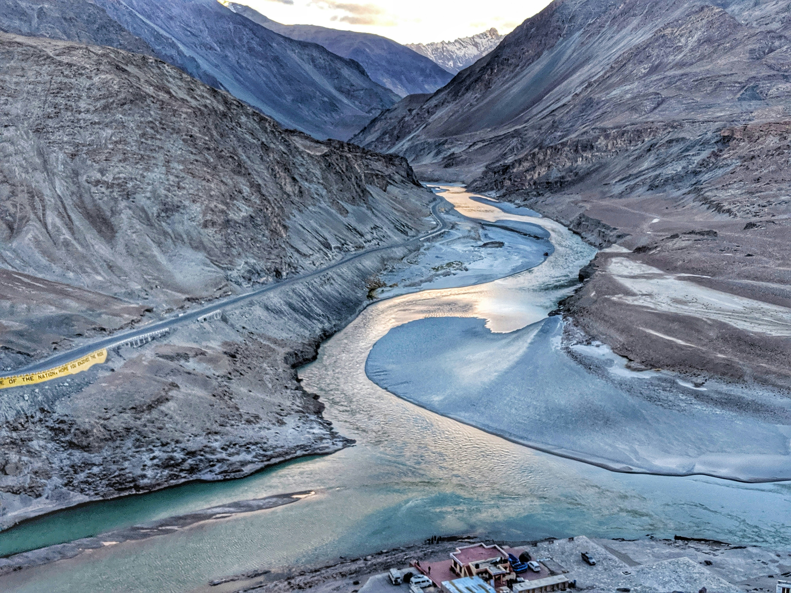
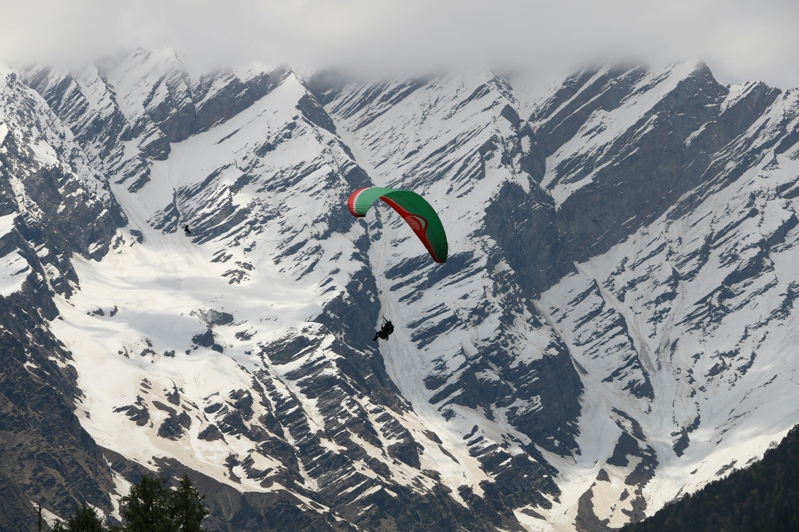

Srinigar is a modern waterworld, dominated by Dal Lake and its twisting waterways, tree-lined Nagin Lake, and the Jhelum River. Engulf yourself in local culture by embracing your sea legs and renting one of the wooden boats called shikaras for a daytime or twilight cruise. On land, stroll through the terraced hillsides of the 400-year-old Mughal Gardens, created by Emperor Jehangir for his wife, and shop for indigenous crafts like hand-woven silks and embroidered shawls.
The best time to visit Srinagar is from April to October when the weather is not too cold and is perfect for sightseeing. Whether you choose to visit Srinagar in summer, autumn or winter, the land is magnificent and you will be mesmerised by its unblemished beauty. Pari Mahal, Hari Parbat Fort, Chashma Shahi, Shalimar Garden, Jamia Masjid, Hazratbal Mosque, Indira Gandhi Memorial Tulip Garden, Nigeen Lake, Dachigam National Park, Botanical Garden, Harwan are some of the best places to visit in Srinagar.
Leh

The Indus and Sanakar Meet
Located in the Ladakh region of Jammu and Kashmir, Leh is known for its stunning scenic locales, Buddhist temples and pristine environment. Due to the strong influence of Tibetan Buddhism, Leh is also known as Little Tibet or the Land of Lamas. Barren mountains with brightly painted gompas (or monasteries), fluttering prayer flags, rocky ridges, tiny settlements and the Indus River add to the overall charm of the region.
Leh is known for its breathtaking landscapes, ancient monasteries, and vibrant Tibetan-Buddhist culture. The best time to visit Leh is between April and June when the weather is pleasant and the days are cool. These months see a high footfall and are considered the peak tourist season.
Manali

Paragliding in Solang Valley
A gift of Himalayas to the world, Manali is a beautiful township nestled in the picturesque Beas River valley. It is a rustic enclave known for its coll climate and snow-capped mountains, offering respite to tourists escaping scorching heat of the plains. the tourism industry in Manali started booming only in the early 20th century, mainly because of ots natural bounties and salubrious climate.
Once a sleepy village, the modern town cocooned in its rich cultural heritage and age-old traditions is now one of the most popular destinations of India. The place is a classic blend of peace and tranquility which makes it a haven for nature lovers and adventure enthusiasts, who want to get off the main torist trails and experience nature up close.
Amritsar
The Golden Temple
Founded in the fifteenth century by Guru Ram Das, the fourth guru of the Sikhs. The heritage city of Amritsar is one of the most spiritually significant and historically rich cities of India. The name of the city has its etymological roots in the Punjabi language and Amritsar comes from Amrit Sarovar, which when literally translated from Punjab means of pool of nectar. One of the largest cities in Punjab. Amritsar is home to India's most serene and humbling sight, the Harimandar Sahib, famously knows as The Golden Temple, the Place of reverence for pilgrims.
Amritsar boasts of various temples and shrines dedicated to Sikh Culture. Besides offering spiritual salvation, the city is also famous for hospitality, tourism, carpets, handloom fabrics and handicrafts. Amritsar does not merely give nourishment to the soul, but also serves mouth-watering delicious authentic Punjabi food steeped in rich tradition. So come, visit & discover this grand city, with its resplendent places of worship, quirky bazaars, vibrant theatrical practices, fascinating folklore and colourful festivals of Baisakhi and Diwali; all of which make Amritsar a premier destination for tourists.
Agra
Taj Mahal
Agra is a city offering a discovery of the beautiful era. Agra has a rich history, reflected in its numerous monuments dotted in and around the city. The earliest citation for Agra comes from the mythological era, where the epic Mahabharata refer Agra as 'Agravana' meaning paradise in Sanskrit. 'Ptolemy', the famous second century A.D. geographer, was the first person who referred Agra with its modern name. The Modern Agra was founded by Sikandar Lodi, ruler of Lodi dynasty in 16th century. It was when Shah Jahan descended the Mughal throne that Agra reached the zenith of architectural beauty.
The city lies in the Western part of Uttar Pradesh on the bank of River Yamuna. Though the wonderful allure of the Taj Mahal attracts people from around the world over to Agra, it is not a standalone attraction. The city offers a trail of fascinating tombs and mausoleums to explore. Acclaimed for its lavish crafts like Pietra Dura (marble inlay) work, rugs and leather goods, and the luscious Petha, Agra equally caters well to shopaholics and foodies.